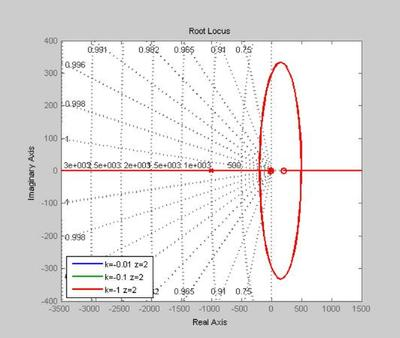
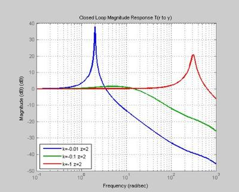
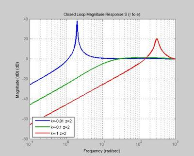
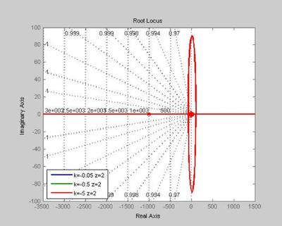
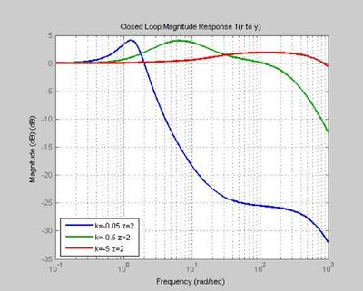
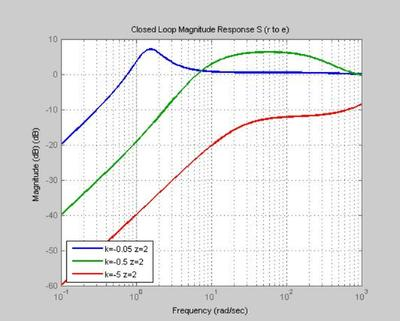
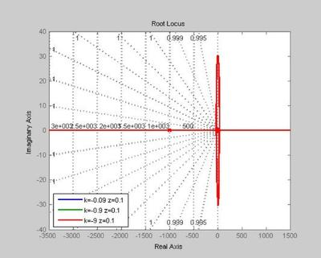
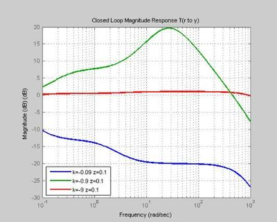
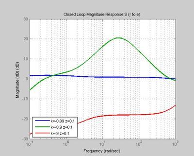

MBC design problem
mbc design, Use mbc mfile to do problem I gave you in class i.e. study how plots change as you vary k and z in K = k [ (s+z)/s ] [ 1000/(s+1000) ]^2; P1 = (s-200)/(s-2) , P2 = (s-20)/(s-2) , and P3 = (s-4)/(s-2) Comment on sens and comp sens (Understand how a small rhp zero makes the control problem more challenging)
Contents
clc; clear; close all;
Form Plant P1=(s-200)/(s-2) P2=(s-20)/(s-2) P3=(s-4)/(s-2)
ap = 2; bp = -198; cp = 1; dp = 1; plant1 = ss(ap,-198,cp,dp); plant2 = ss(ap,-18,cp,dp); plant3 = ss(ap,-2,cp,dp);
Using Plant 1 with k=-0.1 z=2
disp('Using Plant 1 with k=-0.1 z=2') HW1_MBC(-0.1,2,plant1) % choose k, z, plant to use and call mfile
Using Plant 1 with k=-0.1 z=2
Open Loop Poles:
Eigenvalue Damping Freq. (rad/s)
0.00e+000 -1.00e+000 0.00e+000
2.00e+000 -1.00e+000 2.00e+000
-1.00e+003 1.00e+000 1.00e+003
-1.00e+003 1.00e+000 1.00e+003
ol_zeros =
1.0e+002 *
-0.02000000000000 2.00000000000000
Closed Loop Poles:
Eigenvalue Damping Freq. (rad/s)
-2.58e+000 1.00e+000 2.58e+000
-1.81e+001 1.00e+000 1.81e+001
-6.39e+002 1.00e+000 6.39e+002
-1.34e+003 1.00e+000 1.34e+003
sen_zeros =
1.0e+003 *
0.00200000000000 -1.00000000366348 -0.99999999633652 0.00000000000000
   Using Plant 2 with k=-0.5 z=2
disp('Using Plant 2 with k=-0.5 z=2') HW1_MBC(-0.5,2,plant2); % choose k, z, plant to use and call mfile
Using Plant 2 with k=-0.5 z=2
Open Loop Poles:
Eigenvalue Damping Freq. (rad/s)
0.00e+000 -1.00e+000 0.00e+000
2.00e+000 -1.00e+000 2.00e+000
-1.00e+003 1.00e+000 1.00e+003
-1.00e+003 1.00e+000 1.00e+003
ol_zeros =
-2 20
Closed Loop Poles:
Eigenvalue Damping Freq. (rad/s)
-3.94e+000 1.00e+000 3.94e+000
-1.09e+001 1.00e+000 1.09e+001
-2.73e+002 1.00e+000 2.73e+002
-1.71e+003 1.00e+000 1.71e+003
sen_zeros =
1.0e+002 *
Columns 1 through 2
0.02000000000000 -9.99999999999999 - 0.00000033722220i
Columns 3 through 4
-9.99999999999999 + 0.00000033722220i 0.00000000000000
   Using Plant 3 with k=-0.9 z=0.1
disp('Using Plant 3 with k=-0.9 z=0.1') HW1_MBC(-0.9,0.1,plant3) % choose k, z, plant to use and call mfile
Using Plant 3 with k=-0.9 z=0.1
Open Loop Poles:
Eigenvalue Damping Freq. (rad/s)
0.00e+000 -1.00e+000 0.00e+000
2.00e+000 -1.00e+000 2.00e+000
-1.00e+003 1.00e+000 1.00e+003
-1.00e+003 1.00e+000 1.00e+003
ol_zeros =
-0.10000000000000 4.00000000000000
Closed Loop Poles:
Eigenvalue Damping Freq. (rad/s)
-2.42e-001 1.00e+000 2.42e-001
-2.43e+001 + 1.31e+001i 8.80e-001 2.76e+001
-2.43e+001 - 1.31e+001i 8.80e-001 2.76e+001
-1.95e+003 1.00e+000 1.95e+003
sen_zeros =
1.0e+002 *
Columns 1 through 2
0.02000000000000 -9.99999999999999 - 0.00000016861110i
Columns 3 through 4
-9.99999999999999 + 0.00000016861110i -0.00000000000000
  